摘要
近年来，随着经济的迅速腾飞，工业生产制造对于煤炭资源的消耗明显加快，完善的煤炭的交易和配额机制是煤炭市场发展的必要条件。
我们通过分析秦皇岛历史煤价格，建立了基于灰色系统的小波神经网络模型来预测煤炭价格。最终根据结果做出决策和评价，提出了有效方案。
针对问题一，
我们经查阅相关文献，结合有关知识进行分析，初步确立了八种影响因素。然后在各数据库寻找相应数据，经过预处理后，通过建立多元回归模型，分析相关系数来比较权重，
以此对指标进行筛选和评估，最终确定确立了5种指标作为影响煤炭价格的重要因素。
针对问题二，
我们考虑到数据不完全性，首先建立了灰色预测模型对未来一段时间数据进行预测，
并通过求后验差比值确定精度。然后建立了灰色BP神经网络预测模型，将历史数据代入模型进行训练，最后将各影响因素的预测值代入训练完成的神经网络模型中，求出题目所要求的未来煤炭价格的预测值。我们通过误差直方图和相关系数的计算，
验证了该模型精度高，误差合理，是比较理想的预测煤炭价格的方法。
针对问题三，
我们考虑到小波变换常用来处理异常情况，因此，我们将其与人工神经网络相结合，建立了复合小波神经网络预测模型，来进行实际因素情况下的价格预测，此模型具有更高的灵活度及精确性。
通过多次训练，最后求出误差较小的煤炭价格预测值。
针对问题四，
我们根据问题三的模型以及相关文献的研究，结合未来煤炭市场的发展趋势对政府的政策作出评价和建议。研究表明，经济因素是碳交易价格的最主要影响因素，市场因素和气候变化是碳交易价格的主要影响因素，
能源价格对碳交易价格也有一定的影响，但影响效果不明显。在此基础上本文提出了我国应将产“、“运”、“需”相结合，确定合理的碳配额总量以及以免费为主，有偿为辅的分配方式，逐步推行跨期储备制度的政策建议。
关键词：多元回归分析；灰色预测；人工神经网络；小波分析；煤价格预测
一、问题重述
煤炭属于大宗商品，煤炭价格受到政府监管和市场环境的影响。除此之外，煤炭价格还受气候变化、经济发展、国家政策、能源价格等多方面的影响。
分析影响因素，预测煤炭价格对企业和国家都有重要的意义。
问题一：根据量化分析的数学方法，建立模型来确定影响煤炭价格的主要因素，并以此模型的分析结果为依据，将影响秦皇岛港动力煤价格的主要因素的按照影响程度排序。
问题二：结合所给数据和第一问的求出的影响煤炭价格的主要因素，建立煤炭价格预测模型，分别以天、周、月为单位，预测未来31天、35周、36个月的煤炭价格，并完成表格。
问题三：结合第一问的主要影响因素第二问预测的煤炭价格数据，综合考虑未来各种情况所引起的煤炭价格影响因素在结构性和重要性方面的变化情况，并确定量化影响，
建立贴合实际煤炭价格综合预测模型，并进一步准确地求出煤炭价格的预测结果。
问题四：基于问题三的实际预测模型和预测结果结果，综合各种实际情况对影响煤炭价格因素的作用大小，对政府部门提出切实可行的建议，以促进我国未来煤炭市场的平稳发展。
二、问题分析
找出影响煤炭价格的因素并预测煤炭价格属于数据处理和关联分析问题，通过搜集和预处理相关数据并进行相关计算，建立相关的多元回归模型以及灰色BP神经网络预测模型，求出影响因素以及预测结果。最终根据结果作出决策和评价，并向公司提出符合实际且有效可控的方案。
对于问题一，本题属于数据处理和关联分析问题，对于解决此类问题一般用 数据分析和多元回归分析的数学方法。由于以上原因，我们收集相关数据并进行 预处理，然后将处理后的数据带入回归模型计算出 R 和相关系数，
以此判断不同因素对动力煤价格的关联度和影响大小，来对指标进行筛选和排序。
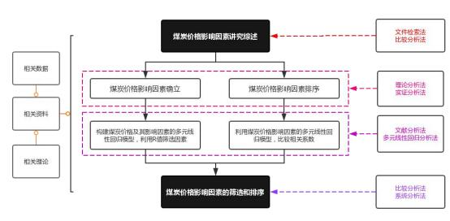
对于问题二，本题属于分析预测和深度学习问题。对于解决此类问题一般用灰色预测和建立BP神经网络的数学方法。由于以上原因，我们首先建立了灰色预测模型，求得影响煤炭价格的因素的预测值和精度，然后建立了灰色BP神经网络预测模型，将历史数据代入模型进行训练，最后将各影响因素的预测值代入训练完成的神经网络模型中，求出未来煤炭价格的预测值。
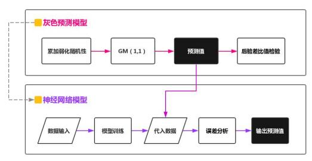
对于问题三，本题属于模型优化与综合分析预测问题。对于解决此类问题一般用的小波变换与人工神经网络的思想，来进行实际因素情况下的价格预测。由于以上原因，我们基于小波分析而构成的具有神经网络思想，建立了复合小波神经网络预测模型，将突发事件的影响作用在各个自变量上，进而作用于煤炭价格。最后求出误差较小的煤炭价格预测值。
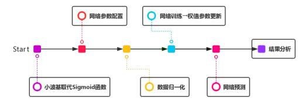
对于问题四，本题属于评价与决策类问题。首先我们根据问题三的模型以及给出的实际预测数据，然后结合未来煤炭市场的发展趋势以及各个影响因素因此可能发生的变化，对政府部门提出效果明显且切实可行的政策建议。
三、模型假设
1.假设题目所给的数据真实可靠；
2.假设文中所引用的文献和结论均正确可靠；
3.假设选定的具体指标基本可以代表我们选取的影响因素；
4.假设各因素间无相互影响；
5.假设秦皇岛煤炭价格仅受长期趋势和短期的影响。
四、定义与符号声明
五、模型的建立与求解
5.1 煤炭价格的影响因素和排序 5.1.1 煤炭价格的影响因素的确立
基于已有文献中关于煤炭价格的影响因素的研究，并结合环境学和经济学等理论知识，我们选取了初步认为对煤炭价格影响较大的指标，
并综合考虑可获取性等因素，总结出以下四个方面影响因素及具体指标：
1.经济因素：经济的发展水平直接影响着社会的需求和和消费，煤炭价格的变化离不开市场经济，宏观经济波动必然会给煤炭价格的涨跌带来影响。
根据已有研究和文献，我们选择对国内经济与金融煤炭交易市场最密切的上证180炭效率作为国内企业煤炭经营效益的指标，其反映了煤炭排放公司的绩效表现。对于国内外宏观经济方面，
我们选取了上证指数和道琼斯工业指数作为国内外宏观经济对于国内煤炭市场冲击的指标。
2.能源价格：Bunn &Fezzi（2007）通过构造VAR模型，得到了煤炭价格与电价和天然气价格存在密切关系的结论，并其验证了煤炭价格与能源价格之间的关系是正相关的。
基于此研究，我选取了原油价格、煤炭价格、天然气价格作为能源方面的重要因素。其中，对于原油，我们选择了全球原油的定价基准德克萨斯原油价格作为原油价格的指标；
对于煤炭，我们选择国内煤炭期货的每日收盘价作为煤炭价格的典型代表指标；对于天然气，我们选择国内天然气期货的每日收盘价来作为天然气价格的指标。
3.气候环境：Considine 通过对美国能源需求的研究，得出炎热和寒冷的天气对能源消费和温室气体排放有较大的影响这一结论。
当处于炎热和或寒冷的天气时，人们会增加使用制冷设备或热力系统的频率，导致能源需求上升，二氧化碳排放量增加，因此决定煤炭价格。基于上述结论，我们主要考虑空气中的碳含量和极端天气对于煤炭价格的影响。
对于极端天气，我么从天气网收集了对应地区的日最高温度、日最低温度数据作为衡量指标。
4.市场环境：陈晓红等学者认为煤炭价格的影响因素大致分为供给、需求和市场影响三个方面。市场因素主要有：未来价格、政策和炭交易市场参与者的数量，
以及各方运用市场力量的能力等市场结构性因素决定。我们根据已有的研究，认为国际煤炭市场是煤炭价格的重要影响因子，所以选取欧盟碳价格作为衡量市场环境的重要指标
5.1.2 数据的处理
我们分别从不同数据源，获取了我们初步分析认为的自变量的数据。为了避免汇率的影响，我们统一货币计量单位，分别对国外原油、国外煤炭价格用原始数据乘以汇率计算得到。
针对极端天气这一指标，采用通用认定当日最高温度在35℃以上称为高温天气，当日最低温度低于0℃称为低温天气。
设定虚拟变量，当气温高于35℃或低于0℃时，设为1，其余设为0。
针对来自各数据源的数据中有有的存在部分缺失的情况，我们采用插值法进行填充。并且，为了避免煤炭价格相关性中存在异常的情况，我们基于马氏距离进行异常检验，剔除了部分异常样本，
实现数据总体有效且更为准确
5.1.3 利用回归模型对指标进行筛选和排序
在对数据进行合理的处理后，我们设秦皇岛动力煤的价格为`y`，
影响煤炭价格的各种因素的指标为`x_i(i=1,2,...,m)`，建立因变量y与自变量`x_1`,`x_2`,…,`x_m`之间的回归模型。
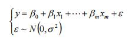
其中回归系数`β_i(i=1,2,...,m)`表示各个指标对秦皇岛动力煤的影响程度；
`|β_i|`越大，`x_i`对`y`的影响程度越大。
我们将处理后的数据代入模型中，利用最小二乘法求出每个`β_i(i=1,2,...,m)`的所有估计值`β_j(j=1,2,...,m)`，并选取`β_j'(j=1,2,...,m)`，使得当时`β_j=β_j'(j=1,2,...,m)`，误差平方和
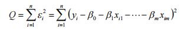
达到最小。之后，我们将求出的β代回原回归模型得到y的估计值yˆ，这组数据的拟合值为`Y=Xβ`，拟合误差`e=Y-Y'`残差，可作为随机误差ε的估计，而`Q(β)`即为残差平方和。
之后，我们利用回归分析判断每个自变量`x_i(i=1,2,...,m)`, 对y的影响的显著 性，通常认为当`R^2>=0.25`时，对应自变量与因变量有较强的相关性。
我们将显著性较小的指标剔除，从而对指标进行筛选，并得到以下结果：
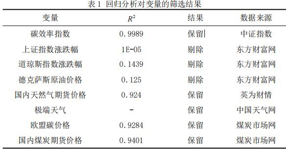
由表 1 可以看出，碳效率指数、天然气价格、国内天然气期货价格、欧盟碳 价格、国内煤炭期货价格具有很强的相关性；而其他因素相关性较弱，将其剔除。
通过对保留下来的指标的系数的绝对值`|β_i|`进行比较，我们得到了影响秦皇岛港动力煤价格的主要因素按影响程度从大到小的排序，如下表所示：
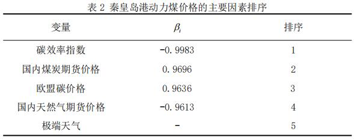
5.2 基于灰色 BP 神经网络的煤炭价格预测模型
根据变量筛选结果建立灰色BP神经网络模型对未来煤炭价格进行预测。灰色BP神经网络模型是将灰色预测模型和BP神经网络结合的预测方法，综合了灰色模型预测未来变化趋势定性分析的优点和BP神经网络适合于非线性的样本定量分析的优点。
灰色预测模型是用过少量不完全的信息对未来一段时间的数据进行预测。BP神经网络模型通过构建多个分线性的神经元组成的并行互联的网络，可以有效地分析非线性的数据样本，而且灰色预测模型优化了BP神经网络输入层随机的缺点，两者的结合可以有效地完成一定时间范围内对煤炭价格的预测。
5.2.1 灰色预测模型
设X(0) (k)为一非负单调的原始时间序列第k期的值。
首先，我们采用依次累加的方法弱化原始时间序列的随机性，从而得到X(1) ,对X(1) 建立如下一阶线型微分方程：
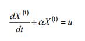
得到灰色模型GM(1,1)，求解预测值
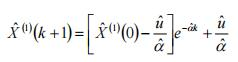
在模型预测的过程中，我们将原始数据进行累加处理，求解得到的是累加后的预测值，
所以若想求得真是的预测值，则需要在进行累减处理，将GM(1,1)模型所求得的数据X(1) (k+1)进行累减，还原为真实的预测值X(0) (k+1)，则
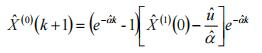
由上述步骤可以求出各个影响煤炭价格的指标序列的预测结果，但预测结果的精确性需要对比后验差模型精度表来进行衡量。
通过计算原始序列X(0) 和残差的方差之比C（后验差比），来衡量模型的预测精度，
值越小表明预测值和实际的差异越小，精度越高。根据后验差检验判别表得知，当值时，表明模型拟合效果好；当值在区间内时，模型拟合效果合格；当值在区间内时，模型拟合效果基本合格；当值时，表明拟合效果差，需要采用其他方法进行预测。
为尽量避免由于随机因素对灰色预测模型带来的误差影响，我们对不同解释的变量采用了不同的预测过程，对碳效率指数、欧盟碳价格、国内煤炭期货价格及天然气价格采用直接建立灰色预测模型；
对于极端天气这一虚拟变量采用首先分别预测日最高气温和日最低气温，然后根据极端天气的规则进行判别是否为极端天气的方法。
利用上述方法求得的灰色预测模型中煤炭价格影响因素的精度如下表所示：
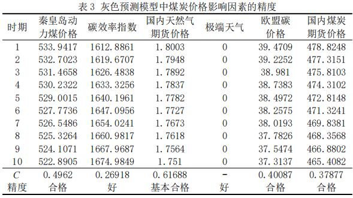
从上表可以看出，保留下来的各个因素的C值均在合理范围内，表明此模型的误差较小，精度较高，是比较理想的预测未来各因素数值的模型。其中，极端天气和国内天然气期货价格受随机影响因素影响较大，
预测精度较其他影响因素较小，误差较大。
而碳效率指数、欧盟煤炭价格和国内煤炭期货价格预测效果较好。
因此，我们将处理过的过去一年或两年的数据分别以天、周、月为单位代入上述灰色预测模型中，求得了未来31天、35周、36个月影响煤炭价格的各因素的预测值。具体拟合程度见下图
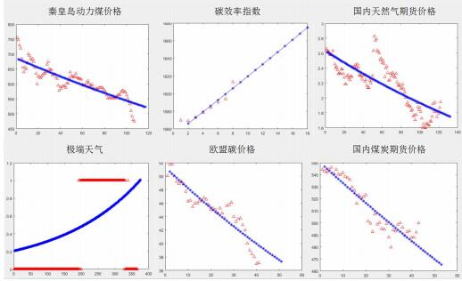
5.2.2 灰色BP神经网络预测模型
我们已经用灰色预测模型求出影响煤炭价格的各因素的预测值，并解决了传统BP神经网络输入层存在随机性的问题。之后，我们根据BP神经网络模型的模拟过程建立神经元的输入输出关系，
模拟煤炭市场中重要影响因子与煤炭价格之间的复杂关系。把历史数据代入输入层和输出层，对此BP神经网络模型进行训练。对于训练完成的BP神经网络，我们对其输入层输入重要影响因子的预测值，经过隐含层的处理后输出预测结果，即所需要的煤炭价格的预测结果。
BP神经网络的基本思想如图所示：
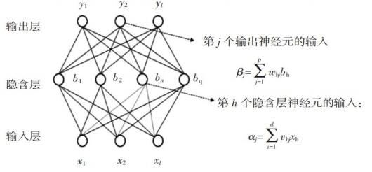
其具体实现过程如下：
1.数据输入：在(0,1)区间内随机初始化网络中所有节点的连接权ωij 和节点的阈值θij ，读入经过处理的重要影响因子的样本xk 和煤炭价格yk 。
2.模型训练：根据已知参数计算当前的煤炭价格yk ，并计算出输出层神经元的梯度项g和影藏层神经元的梯度项eh ，计算各层神经元节点的误差信号，反向传播误差，
修正权值和阈值，不断重复上述步骤，直到此神经网络的输出值达到要求的误差范围。我们以31天预测为例，训练数据、测试数据和验证数据分别占比70%、15%、15%，隐层神经元个数为12，经过多次训练，得到的误差较小的满意结果：
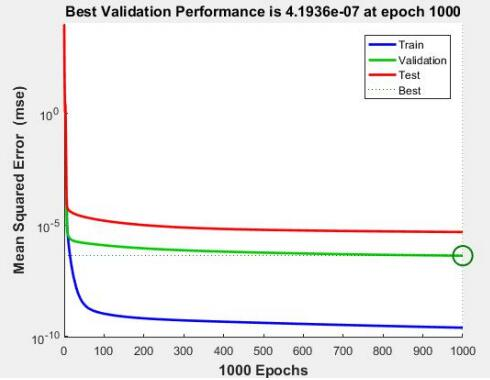
我们采用的是梯度下降算法，先初始化一个解，在这个解的基础上，确定一个搜索方向和一个移动步长，使初始解根据这个方向和步长移动后，能使目标函数的输出下降。 然后将它更新为新的解，再继续寻找下一步的道移动方向的步长，
这样不断的迭代下去，目标函数也不断下降，最终就能找到一个解，使得目标函数比较小。
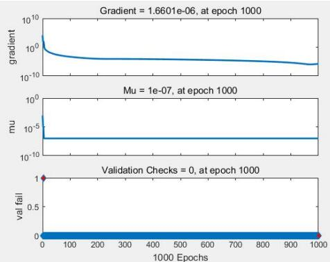
图中gradient曲线，是我们借助梯度来更好的确定目标函数下降方向，其可以理解为单变量时的导专数。图中的mu是一个超参数，用来表明梯度方面，可以看做是在是在最初选取的样本方向是增加加速度来修正下降方向。
val fail代表检验失败次数，可以看到基本检验成功。
下图为回归结果中，r代表相关系数，其绝对值越接近1，代表相关性越大，这四幅图分别代表训练样本、验证样本、测试样本和全部样本的回归及其相关系数。可以看出，拟合效果非常好。
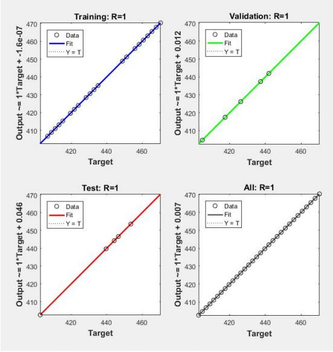
我们在对数据进行标准化、剔除和筛选等处理的基础上，利用附件所给的数据和收集到的数据进行神经网络模型的训练，经过多次学习和训练，得到训练完成的BP神经网络预测模型，结合上面图示及分析，
能够很好的拟合和预测结果。然后输出我们得到的预测值
输出预测值：因为BP神经网络具有较强的适用性和容错能力，所以利用历史数据建立训练模型，把灰色预测的数据结果带入训练好的模型中，就可以求出充分考虑历史信息的预测结果。其结果如下表所示：
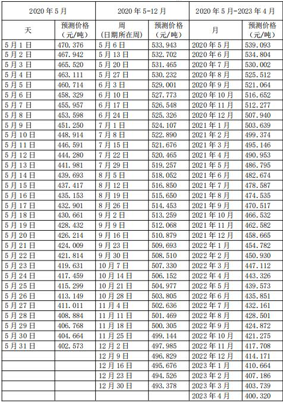
5.3 煤炭价格预测的复合小波神经网络模型
小波神经网络是结合小波变换和人工神经网络的思想构成的，它是通过对小波分解进行平移和伸缩变换后而得到的级数，具有小波分解的一般逼近函数的性质。
并且，因为小波神经网络引入了两个新的参变量，即伸缩因子和平移因子，所以小波神经网络比小波分解具有更多的自由度，从而使它具有更有效灵活的函数逼近能力，经过筛选恰当的各参数，通过较少的级数项组成的小波神经网络就能达到优良的逼近效.
为了更加准确地预测秦皇岛港动力煤价格，我们依据题目，考虑可能的突发事件会引起的煤炭价格随机波动，进一步建立秦皇岛煤炭价格综合预测模型，使其具有更高灵活性，更适用于一般情况。
5.3.1 小波及小波变换
满足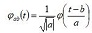的平方可积函数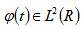为基本小波或母小波。
其中为的Fourier变换。令
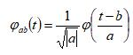
将φab (t)称为由母小波φ产生的依赖于参数a，b的连续小波，
也称为小波基。设非线性时间序列变化函数，则小波变换为
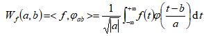
由上式可知，小波基中参数b变化具有平移作用，参数a的变化不仅改变小波基的频谱结构，
而且改变其窗口的形状和大小，因此，a与b分别被称为φab (t)的伸缩因子和平移因子。
对于函数f(t)，其局部结构的分辨可以通过调节参数a和b，即调剂小波基窗口的大基，以此来构造级数和逼近信号函数。而
不同的是，小波基是通过平移和伸缩构成的，具有良好的局部化性质，依据小波理论达到最佳的函数逼近能力。
5.3.2 复合小波神经网络预测模型
复合小波神经网络是基于小波分析而构成的具有神经网络思想的模型，即用非线性小波基取代了通常的非线性Sigmoid函数。
我们把非线性时间序列通过对所选取的非线性小波基进行线性叠加来实现，即同小波级数的有限项来逼近时间序列函数。
实际上，用小波基φab (t)拟合时间序列s(t)的过程就是信号分解的过程，所以我们把待分析的信号s(t)近似分解成若干正交归一化的基本小波φ(n) (t)（其中n是小波信号）作离散位移bk 和尺度伸缩ak 后的加权和，即：
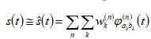
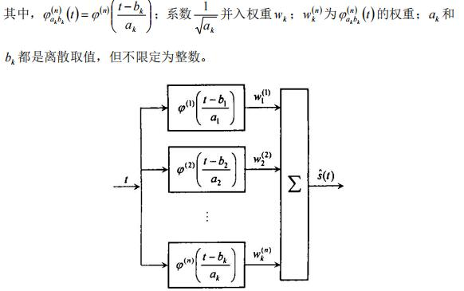
图中给出了复合小波神经网络的结果，仅含有一个输入一个输出节点。此时 的sˆ(t)实际上使母小波位移和伸缩后的加权和。
如果每个母小波都满足容许条件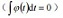，则它们的加权之和也当然满足容许条件。所以 sˆ(t)本身也可以 看作小波，称为复小波。
它本身也同样可再作位移和伸缩，他是和待分析信号最匹配的小波。
我们通过确定网络参数`w_k`,`a_k`,`b_k`和`n`，使得`s(t)`与`sˆ(t)`之间的误差的平方和最小，即：
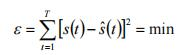
为达到这个目的，我们采用共轭梯度法或随机梯度法寻优。但不论采用哪种方法都需要知道对，，的偏导数。例如当n=1且采用Morlet小波时，存在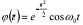。
令`t^'=(t-b_k)/a_k`，则偏导数分别为：
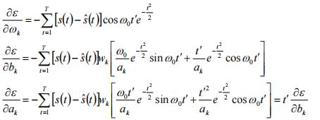
递推寻优时，`b_k`的初始值对收敛性能影响很大，需要做比较准确的预估计。
关于n的确定，我们使用逐步检验法。我们对非线性时间序列的拟合误差事先给出了一个界限，设拟合误差小于D，则n从取1开始，计算得出`ε_1`,
若`ε_1 < D`,则`n=1`，否则n增加取2；若`ε_2 < D`，则`n=2`，否则继续逐步下去，直到时`n=n^*`，使ε* n < D`，从而求的模式数`n`的最优值为`n^*`。
5.3.3 利用复合小波神经网络综合模型预测煤炭价格
我们根据处理后的历史数据和灰色预测模型所求数据，应用复合小波神经网 络模型对煤炭价格进行了预测，经过多次训练，我们选取了拟合程度最优的预测 结果，其结果见图 10 所示；
误差大小与拟合度见图 10，即由 6个隐形节点进行 预测即可达到精度非常高的拟合。
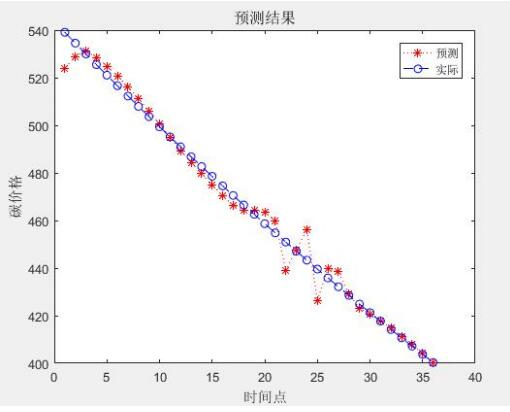
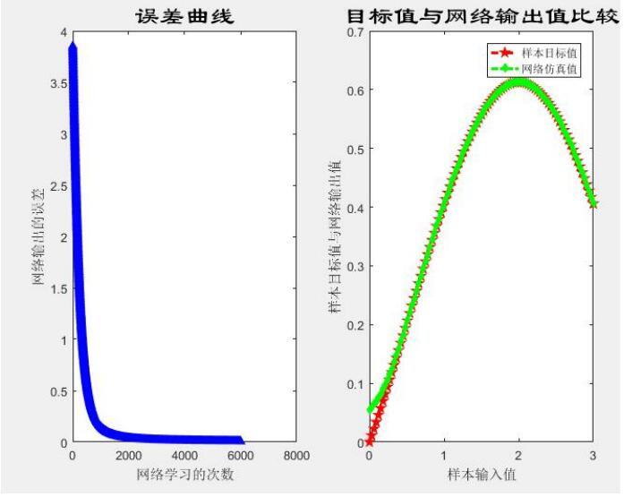
由上图可以看出，小波神经网络的拟合性能很好，网络训练到 2500 次左右 的时候，误差基本保持不变了。
5.4 基于实际预测模型向政府部门的政策建议 5.4.1 结论
通过对已有数据的研究处理以及各种影响因素的分析，最终得出影响煤炭价格的主要因素为经济因素、能源价格、气候环境和市场环境。并由此构建了企业碳交易价格影响因素结构方程模型，
并根据根据相关研究假设对煤炭价格影响因素的作用机理进行了简要的分析。因为受所研究问题的复杂性以及相关数据准确性和一般性的影响，本文尚不能从完全准确地解释煤炭价格的内在影响机制，
但是通过对本领域相关数据的研究分析依然可以得出一些有效结论，对进一步推进我国未来煤炭市场的平稳发展提供借鉴。通过前文分析，至少可以得出以下结论：
1.影响煤炭价格的主要因素。经济因素是煤炭价格的最主要的影响因素，市场环境和气候环境是煤炭价格的主要影响因素，能源价格对碳交易价格也有一定的影响，但影响效果不明显。
然而不少国内外学者对欧盟碳交易价格进行研究时发现能源价格对欧盟碳价具有显著的影响。这可能是因为欧盟碳排放权交易市场是一个成熟稳定的碳市场，碳市场参与者众多，大量存在各种投资机构，对能源价格的变化更加敏感，提前做出“囤聚”碳配额等行为，从而导致对碳价有显著的影响。
2.各个影响因素之间存在相互影响和制约作用。气候环境通过影响经济因素、市场环境、能源价格间接影响煤炭价格；经济因素通过影响市场环境和能源价格间接影响煤炭价格；市场环境通过影响能源价格间接影响煤炭价格。
5.4.2 向政府部门的政策建议
通过前文的分析研究可知，经济因素是煤炭价格的最主要影响因素，市场因素和气候变化是煤炭交易价格的主要影响因素。因此，将从这三方面对煤炭价格机制提出如下建议：
1. 逐步推行煤炭跨期储备制度。跨期储备制度，主要指煤炭排放权在一定时间或空间内的储备和借贷。跨期储备制度在一定程度上能够弱化由于气候剧烈变化导致的对煤炭排放权的需求变化，进而导致煤炭价格的发生剧烈波动以及所产生的负面影响，
同时也能减少企业的煤炭减排的成本。一个成熟的煤炭交易市场应该允许跨期储备制度的存在。因此，我国在全面建设煤炭交易体系的过程中，为了保证煤炭价合理有序的运行，可以考虑逐步推行跨期储备制度，以避免一些不可控因素对煤炭市场的干扰。
2.“产“、“运”、“需”相结合。2020年《“十三五”规划纲要》明确提出我国将以大型煤炭基地为重点，统筹资源禀赋、开发强度、市场区位、环境容量、输送通道等因素。优化煤炭生产布局，达到“产”、“运”、“需”基本平衡，使我国煤炭市场更加成熟，从而形成稳定的煤炭价格机制。
3. 确定合理的煤炭配额总量以及以免费分配为主、有偿分配为辅的分配方式。若煤炭配额总量过多，将会使得煤炭价格过低，严重损害企业节能减排进行煤炭交易的积极性，从而导致煤碳交易机制发挥不出应有的效果。煤炭配额总量过低，将会使得煤炭价格过高，大大提高企业的生产成本，
影响企业的生产连续性，不利于企业的长远发展。因此，确定合理的煤炭配额总量至关重要。实现煤炭总量控制的命令控制手段体现总量减排目标和配额消费核查及处罚方面，经济刺激手段体现在燃煤用户可以通过交易来满足燃煤减量的配额需求。煤炭配额交易制度将促使企业灵活减煤、降低燃煤用户的减量成本和政府的管理成本、激励超量减煤，
从而实现资源配置的帕累托次优状态。政府在总量控制与配额交易的过程中仅仅扮演市场监督者与配额核查责任者的角色，无需干预配额交易市场的具体细节。使得企业逐渐适应并接纳，从而保证煤炭市场交易价格平稳有序的运行。
六、模型检验
6.1 问题二模型检验
关于灰色预测模型，以碳效率指数为例，均方根误差为 13.9944，均方误差 为 3.767，百分绝对误差为 6.7941%，后验差比值C 为 0.26918，判断其预测精度较好。其余影响因素的后验差比值均以算出，在表 3 中给出。
关于灰色神经网络预测模型，我们可以得到误差直方图，如图 12 所示。我 们可以看到，训练集与测试集基本均在零误差线附近，虽有少量测试集拟合效果 不佳，但总体准确性较高，
能够较为准确的反映出灰色神经网络的预测结果。
6.2 问题三模型检验
小波神经网络的拟合性能很好，网络训练到 2500 次左右的时候，误差基本 保持不变且非常小，目标值与网络仿真值也逐渐趋于相似，具体流程如下图所示。
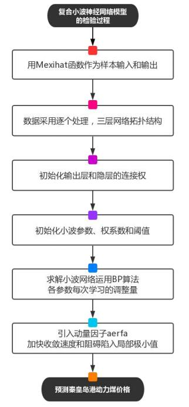
七、模型的评价与推广
7.1 模型的评价 7.1.1 模型的优点
1.激活函数采用 Sigmoid 函数，收敛较快，梯度不会消失。
2.采用灰色 BP 神经网络预测模型，解决了传统输入层所存在的随机性问题， 更精确的展现复杂关系。
3.小波神经网络有更多的自由度，更灵活有效的函数逼近能力。
7.1.2 模型的缺点
1.使用的激活函数不是完全理想的模型，输出均值不接近零。
2.灰色预测模型中，部分数据拟合灰度较大，神经网络也具有局部极小值收 敛缺陷，使其精度难以进一步提高。
3.运输成本对煤炭价格有举足轻重的影响，尤其是煤炭运输的瓶颈问题，这 是影响煤炭市场的重要因素。但是由于运输成本数据难以获得，本文未能对此进行分析。
7.2模型的推广
通过此次问题，我们建立了回归方程、灰色 BP 神经网络预测模型和小波神 经网络模型。回归方程作为经典回归分析方法，在其他问题中也有很广泛的应用，本次借助相关系数比较权重，
在实际中也有多次运用；灰色 BP 神经网络模型， 经过我们预测结果表明，其能够准确描述秦皇岛煤价格的变化趋势；小波神经网 络充分考虑了突发情况，能够及时捕捉煤价格的随机波动，为有关参与者与决策 者提供了很好的参考价值。
这些模型的建立，都可以很好的应用到实际生活中去，这也体现了建模意义 所在。并且秦皇岛作为我国煤炭重要产出地，通过对其煤价格的研究，不仅丰富 了碳交易市场的研究，
还能更好的引导相关投资，推动相关市场的良性发展。
7.3 模型改进 7.3.1 运输成本作为影响因素
更全面地考虑影响煤炭价格的因素，将运输成本作为一环加入模型中，运输 成本对煤炭价格有举足轻重的影响，尤其是煤炭运输的瓶颈问题，这是影响煤炭 市场的重要因素。
7.3.2 基于 Levenberg-Marquardt 算法的模型改进
为了提高模型预测的精度和计算速度，本部分采用另一种 BP 神经网络模型 求解算法，致力于减少残差和减少迭代次数。LM 算法根据迭代结果动态调整阻 尼因子，使误差函数的值在每次迭代时减小。它是梯度下降法和牛顿法的结合， 收敛速度快。
八、参考文献
[1] 金林，马忠芸，王红红，基于灰色 BP 神经网络碳排放交易价格预测[J]，河 北环境工程学院学报：2020，30（1），27-32+41。
[2] 赵立祥，胡灿，我国碳排放权交易价格影响因素研究——基于结构方程模型 的实证分析[J]，价格理论与实践：2016，7，101。
[3] 洪涓，陈静，我国碳交易市场价格影响因素分析[J]，价格理论与实践： 2009(12)。
[4] 陈晓红，王陟昀，欧洲碳排放权交易价格机制的实证研究[J]，科技进步与 对策：2010(19)。
[5] 杨福生，小波变换的工程分析与应用[M]，北京：科学出版社，1999。
[6] 宁云才，煤炭需求预测的复合小波神经网络模型[J]，煤炭学报：2003， 108-110。